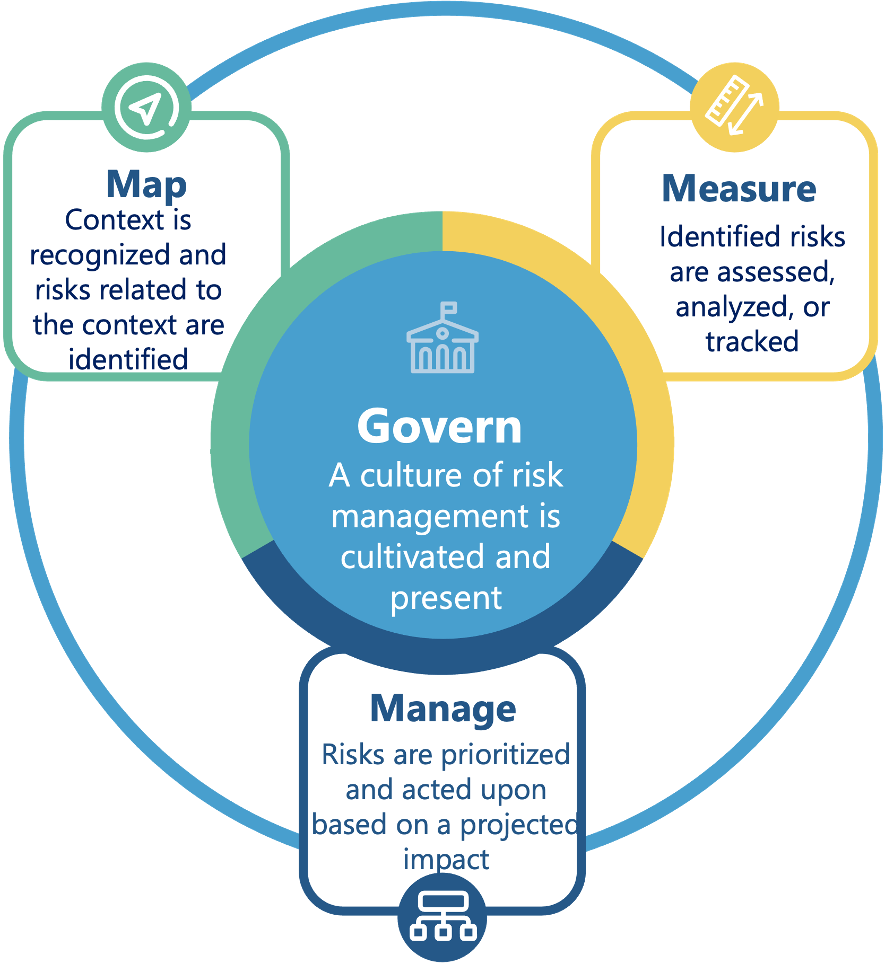

The Playbook suggests ways to navigate and use the AI Risk Management Framework (AI RMF) to incorporate trustworthiness considerations in the design, development, deployment, and use of AI systems.
• The current draft Playbook is based on AI RMF 1.0 (released on January 26, 2023) and includes
suggested actionsSuggested Playbook actions are not intended to be comprehensive, but instead provide foundational perspectives on trustworthy and responsible AI concepts and practices to date. To remain non-prescriptive, suggestions are specific but not too granular., referencesSuggested references for additional reading are informational only and intended to serve as a sampling from the available literature on the given topic or subtopic area., and documentation guidanceGuidance for transparency efforts can be used by organizations to consider and document their AI risk management activities. to achieve the outcomes for the four functions in the AI RMF: Govern, Map, Measure, and Manage.
• Playbook suggestions are developed based on best practices and research insights.